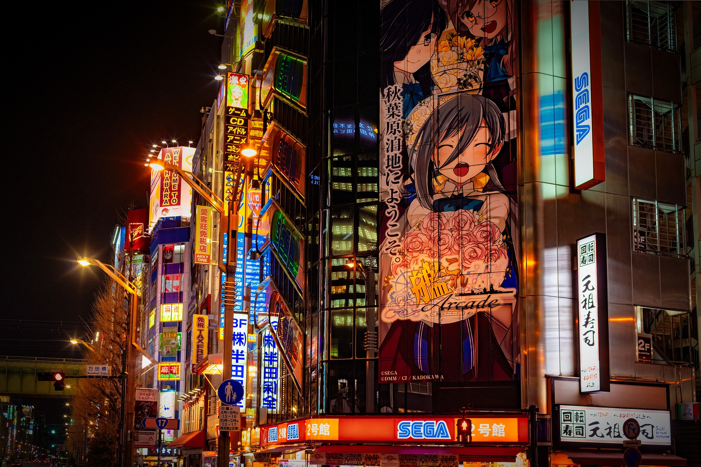
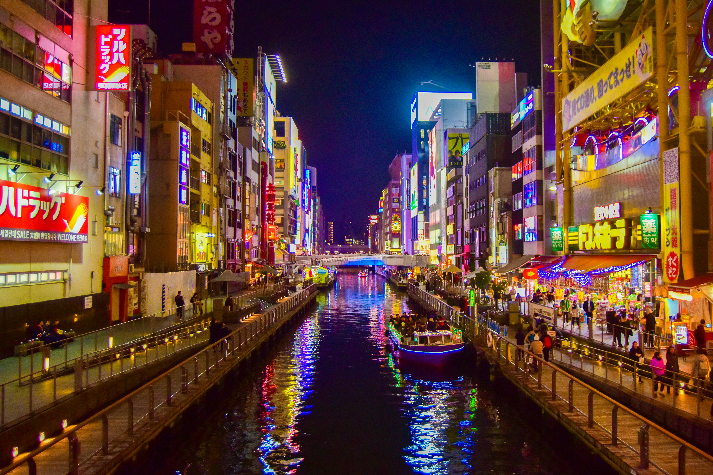

Hey everyone! If you’ve spent countless hours getting lost in the streets of Shibuya through Persona 5, marveling at the breathtaking skies in Makoto Shinkai films, or collecting vintage manga volumes, visiting Japan is bound to feel like stepping straight into your screen.
Planning your first or fifth adventure can feel overwhelming with so much ground to cover. To help you build the ultimate itinerary, here are our must-visit spots tailored specifically for every anime, gaming, and pop-culture fan.
1. Akihabara & Nakano Broadway: The Collector’s Paradise
No pilgrimage is complete without a stop in Tokyo's Akihabara (Electric Town). Packed with towering arcades like GiGO, multi-story figure shops, and retro game sanctuaries such as Super Potato, it’s the beating heart of gaming culture.
Pro tip from our team: Don't sleep on Nakano Broadway. Located just a quick train ride west, this indoor mall is where you'll find legendary Mandarake shops overflowing with rare animation cels, vintage retro cartridges, and out-of-print manga.
2. Odaiba: Where Mecha Comes Alive
Head to the waterfront district of Odaiba to witness the life-sized RX-0 Unicorn Gundam standing proudly outside DiverCity Tokyo Plaza. Watching its transformation sequence at night with the Tokyo skyline behind it is pure magic. While you're there, grab exclusive kits at The Gundam Base Tokyo.
3. Ikebukuro: Sunshine 60 Street
While Akihabara leans heavily toward general electronics and classic shonen, Ikebukuro has grown into an incredible otaku hub in its own right. Visit the massive Pokemon Center Mega Tokyo, browse through character specialty cafes, and explore Animate’s multi-story flagship shop—the largest anime goods retailer in the world.
4. Dotonbori & Nipponbashi (Den-Den Town), Osaka
Venturing outside Tokyo? Take the Shinkansen down to Osaka. Beyond the neon-soaked street food heaven of Dotonbori, make sure to spend an afternoon in Den-Den Town. It's Osaka’s answer to Akihabara, often featuring friendlier prices on used consoles, imported figures, and classic trading cards.

Ready to pack your bags?
Japan seamlessly blends futuristic neon dreams with centuries of quiet tradition. Whether you are hunting for rare Game Boy cartridges or simply soaking in the urban aesthetic of Tokyo after dark, the trip will stay with you forever.
Which spot is currently sitting at the very top of your bucket list? Drop your thoughts in the comments below, or register an account on our platform to share your travel haul with the community!